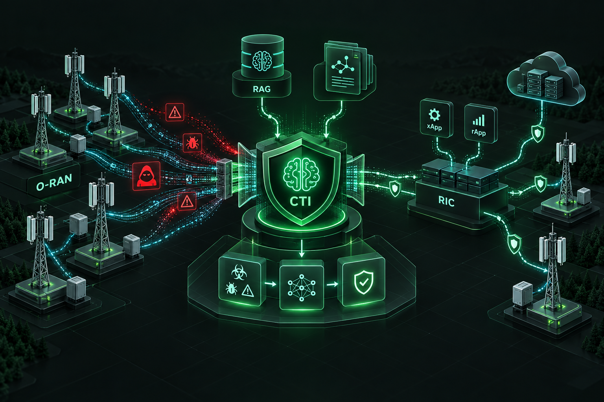
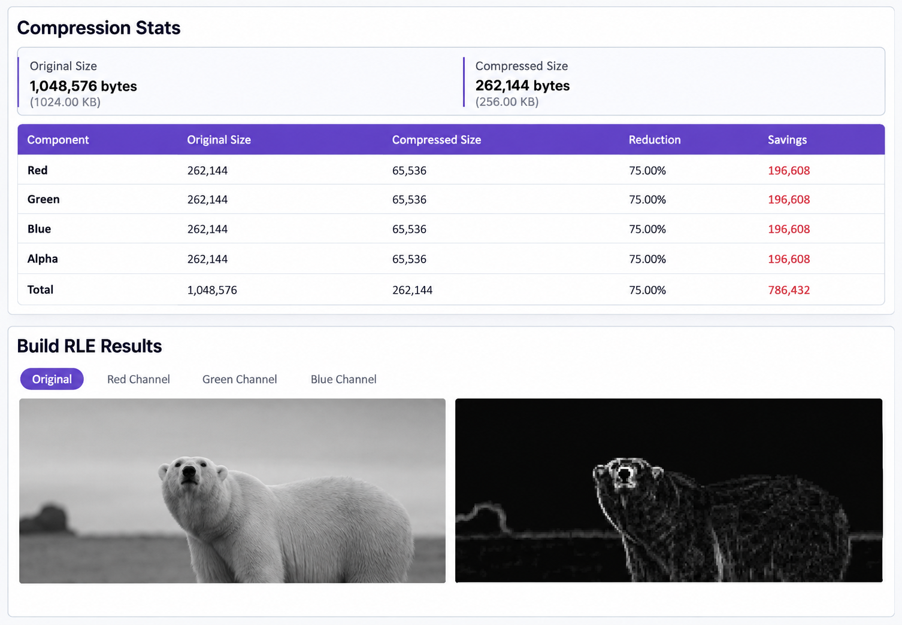
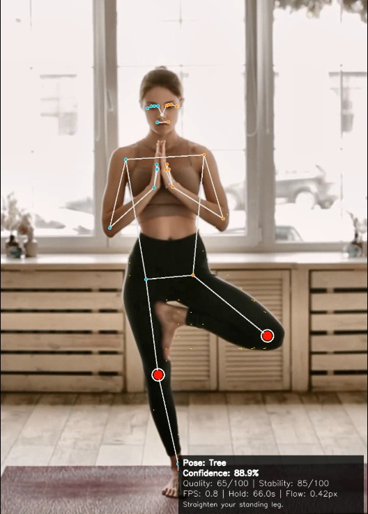
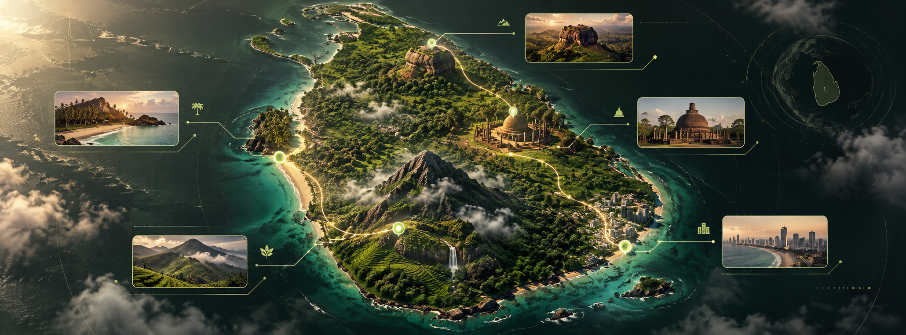
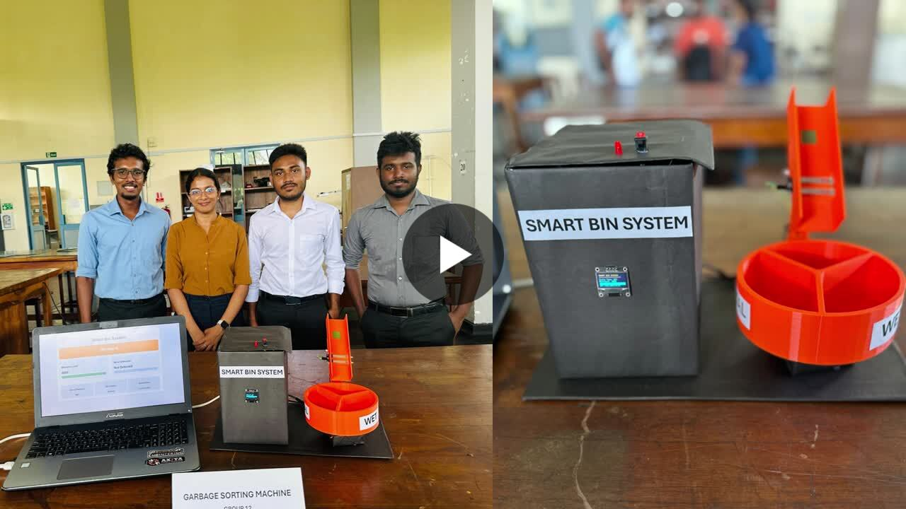

AWSAzureGCPKubernetesLinux
Available for opportunities · Sri Lanka (Onsite/Remote/Hybrid) & Worldwide (Remote only)
Open toDevOps · Cloud · Platform · SRE · Cloud Security
Engineering systems
that stay reliable.
Fresh Computer Engineering graduate and former DevOps Engineering intern building cloud infrastructure, intelligent products, and software that performs under pressure.
02×Hackathon
champion
champion
10+Built
projects
projects
6 moDevOps
internship
internship
Technology stack
Tools I use to build,
ship and observe.
TerraformAnsibleDockerGitLab CI/CDGit
DatadogGrafanaLokiAlloyFluent Bit
PythonJavaC++JavaScriptTypeScriptSQL
PostgreSQLMySQLFirebaseChromaDB
FastAPIReactNext.jsNode.js
01 / About
From an idea to an
observable, scalable system.
I enjoy working where software, infrastructure and problem-solving meet. My work ranges from AWS-native event-driven architecture and infrastructure as code to computer vision, full-stack products and high-performance computing.
Beyond engineering, competitive athletics and hackathons have shaped how I lead, communicate and stay composed when the problem gets hard.
More on LinkedIn ↗02 / Selected work
Things I’ve built.
Cloud, AI, embedded systems and full-stack engineering — selected for range and real-world relevance.

FINAL YEAR PROJECT · OPEN RAN SECURITYCyber Threat Intelligence (CTI) Platform for Open RAN
A disaggregated CTI platform native to Open RAN, integrating custom rApps and xApps with the RAN Intelligent Controller to automate threat ingestion, semantic filtering, AI severity classification, RAG-based mitigation generation and prioritized intelligence sharing.
Built the ChromaDB and LLM-powered mitigation engine, cyber-probe management and threat-simulation components, A1 policy delivery, and the Azure/GKE testbed.

CPU × GPUParallel Image Processing
Denoising and edge-detection benchmarks across Serial C++, OpenMP, Pthreads, MPI, Hybrid MPI + OpenMP and CUDA, with a React and Node.js interface.
Read more ↗
33 LANDMARKSInterpretable Yoga Assistant
Browser-accessible pose recognition, stability analysis and corrective feedback using MediaPipe landmarks and explainable geometric features.
Read more ↗
CRYPTX 1.0 CHAMPIONSTaprobana AI
AI recommendations, expense tracking, translation and smart discovery for Sri Lankan travel. Winner of CryptX 1.0.
Read more ↗
SMART SORTINGSmart Garbage Sorting Machine
ESP32-based dry, wet and metal waste classification with sensor-driven sorting, an OLED interface and real-time dashboard.
Read more ↗92% TEST ACCURACY
Parkinson’s Detection
SVM and KNN classification study, reaching 90% and 92% testing accuracy respectively.
CIRCULAR CITIES
Smart Bin
Waste-management platform with live truck tracking, notifications, issue reporting, optimized routes and resource estimation.
Read more ↗03 / Experience
6 months
Intern DevOps Engineer
GTN TechDesigned AWS-native event-driven architecture, built Terraform infrastructure across environments, optimized GitLab CI/CD pipelines, and strengthened monitoring and logging for production-ready systems.
04 / Academic qualifications
Built on strong foundations.
Formal qualifications spanning computer engineering and software engineering.
Fresh graduate
BSc Hons in Engineering - Computer Engineering
Faculty of Engineering, University of Ruhuna
CGPA 3.60 / 4.00
Diploma
Diploma in Software Engineering
School of Computing, National Institute of Business Management
OGPA 3.93 / 4.00
05 / Credentials
Proof of curiosity.
Continual learning across cloud, data, machine learning, UX and delivery.
AWS Security FundamentalsAmazon Web Services · Jun 2026
AI Skills Fest 2026Microsoft · Jun 2026
AWS Agentic AI DemonstratedAmazon Web Services · Jun 2026
Learn Ansible Basics - Beginners CourseKodeKloud · Sep 2025
SLASSCOM Professional Skills Program - Presentation SkillsSLASSCOM · Jun 2025
SLASSCOM Professional Skills Program - Communication SkillsSLASSCOM · Jun 2025
AWS Knowledge: ComputeAmazon Web Services · May 2025
AWS Knowledge: Cloud EssentialsAmazon Web Services · May 2025
Cloud Essentials - Knowledge Badge Readiness PathAmazon Web Services · May 2025
Cloud Essentials Knowledge Badge AssessmentAmazon Web Services · May 2025
AWS Cloud Practitioner EssentialsAmazon Web Services · May 2025
AWS Educate Introduction to Cloud 101Amazon Web Services · May 2025
Jenkins Project: Building CI/CD Pipeline for Scalable Web ApplicationsKodeKloud · Feb 2025
Java Spring Framework 6 with Spring Boot 3Udemy · Jan 2025
Docker for DevelopersLinkedIn · Jan 2025
DevOps Foundations: DevSecOpsLinkedIn · Jan 2025
Manage Kubernetes in Google CloudGoogle · Jan 2025
Git and GitHub MasterClass: Git Workflow, CommandsUdemy · Jan 2025
Professional Certificate in Agile and SCRUMUdemy · Jan 2025
Get started with JiraCoursera · Apr 2024
Python (Basic) CertificateHackerRank · Apr 2024
Java (Basic) CertificateHackerRank · Apr 2024
CSS (Basic) CertificateHackerRank · Apr 2024
SQL (Basic) CertificateHackerRank · Apr 2024
Introduction to Generative AIGoogle · Mar 2024
Introduction to Large Language ModelsGoogle · Mar 2024
Introduction to Responsible AIGoogle · Mar 2024
Social Media MarketingHubSpot Academy · Feb 2024 · expired Mar 2026
Foundations: Data, Data, EverywhereGoogle · Feb 2024
Create a Supermarket app using OOP Features in JavaCoursera · Feb 2024
Read Js TutorialGreat Learning · May 2024
Intro to Machine LearningKaggle · Jun 2024
How to create a Jira SCRUM projectCoursera · Jul 2024
Responsive Web DesignfreeCodeCamp · Sep 2023
What is Data Science?IBM · Aug 2023
Supervised Machine Learning: Regression and ClassificationDeepLearning.AI · Aug 2023
Foundations of Project ManagementGoogle · Aug 2023
Foundations of User Experience (UX) DesignGoogle · Aug 2023
DevOps EssentialsIBM · Aug 2023
Champion — CryptX 1.0ICTS, University of Sri Jayewardenepura · 2025
Champion — InsurgeX 1.0University of Ruhuna · 2024
Semi-finalist — IDEALIZE’24AIESEC, University of Moratuwa · 2024
3rd — Weather Classification, Predictia 1.0IEEE, University of Peradeniya · 2024
31st — MORAXTREME 8.0IEEE, University of Moratuwa · 2023
17th — HaXtreme 2.0IEEE, University of Ruhuna · 2023
2nd Runner-up — Sustainable Building DesignCEES · 2023
T. Fonseka Memorial PrizeDharmaraja College · 2021
Dagoba — AthleticsDharmaraja College · 2019
HD Excellence — Australian National Chemistry QuizAll-island 2nd · 2019
06 / Contact
Have a hard problem?
Let’s make it simpler.
I’m open to graduate engineering roles, DevOps and cloud opportunities, collaborative builds, and worthwhile technical conversations.